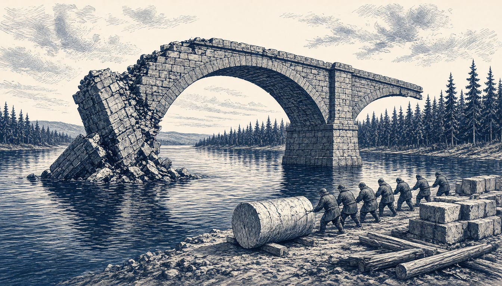

Opinion
Sweden's defence plan must survive an America that leaves
Even with the Americans in, Sweden's Army and Air Force miss NATO's capability targets. A defence built on forces no Swedish minister controls is not a plan, it is a bet.

Stockholm has written a defence plan with one variable left untouched: Washington. The Riksdag voted on 4 November to keep conscripts on duty up to 47, extending a total defence built on the assumption that the alliance holds. Dagens Nyheter reported that the situation for Sweden's defence could become even more pressured if the United States withdraws forces from Europe. That is the position, and we state it plainly: Sweden must dimension its total defence for an American drawdown, in the Defence Preparedness Committee's final report, not after it. A country that plans for three months of major war can plan for one ally changing shape.
The money first, because money without results is the habit we keep meeting. Sweden has borrowed 300 billion kronor for defence, a record addition by any measure, and still Army and Air Force do not meet NATO's capability targets. Read the borrowed billions against the shortfall in that same record. The plan that works on full American assumptions still falls short, so the plan cannot rest on troop levels and air wings that no Swedish minister controls. An assumption you cannot influence is not an assumption. It is a bet, and the Riksdag voted for the Government's proposal to strengthen resilience on exactly that planning basis.
The alternative is already standing, and it has addresses and contracts. Sweden is framework nation for NATO's Forward Land Forces in Finland. The Nordic air forces can fight together as one, the defence ministers said so in Oslo this week. The same ministers, on 12 November, agreed to start developing a Nordic Defence Cooperation Agreement, a legal framework for cooperation that already spans ammunition production, which the Nordic countries promised in 2023 to triple by 2030 and are on track to do. And the ministers wrote down themselves what we have argued for years: European Allies are increasingly taking more responsibility for their own security, and the Nordic nations are ready to carry their part of the burden. This is an inventory, not a hope.
The objection says that planning openly for an American withdrawal signals doubt in the alliance, hands Moscow the argument that the West is splitting, and that deterrence rests on confidence. That case loses to the figures already on record: even with America in, Sweden misses NATO's capability targets, so confidence is being asked to cover a gap that exists now. Deterrence rests on what can be fought with. A gap filled with goodwill is a gap. Writing the drawdown into the planning adds the one thing the targets now leave out, and tells the alliance where our work stands so the gap is filled rather than hidden.
The Defence Preparedness Committee has itself stated it will return to American reprioritisations in its final report, and its own work already takes NATO's Political Guidance 2027 into account. We are only asking that a stated intention get a date. But the Swedish Armed Forces and the Swedish Civil Defence and Resilience Agency, in their planning document for 2025–2030, already size Swedish total defence on their own planning assumptions. Writing that gap down is pressure to fill it, not a signal to leave it. Instruct the committee to write an American drawdown from Europe into the final report as an explicit dimensioning case, sized on European and Nordic capacity alone, and present it to the Riksdag before Political Guidance 2027 locks in. That is the report doing its job.